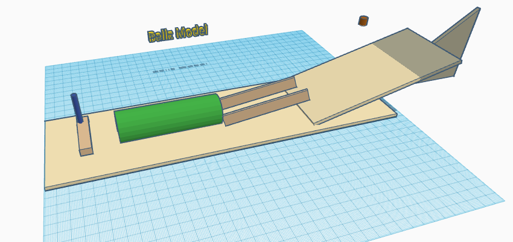
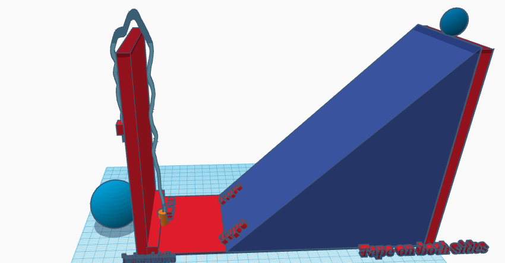
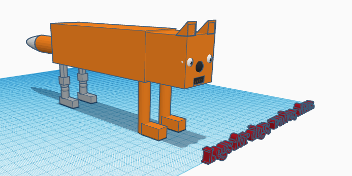
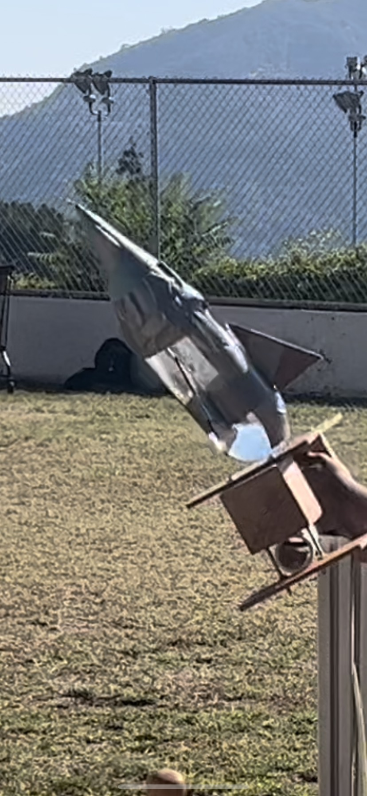
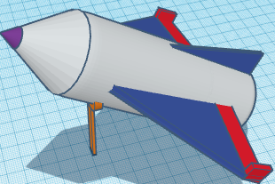
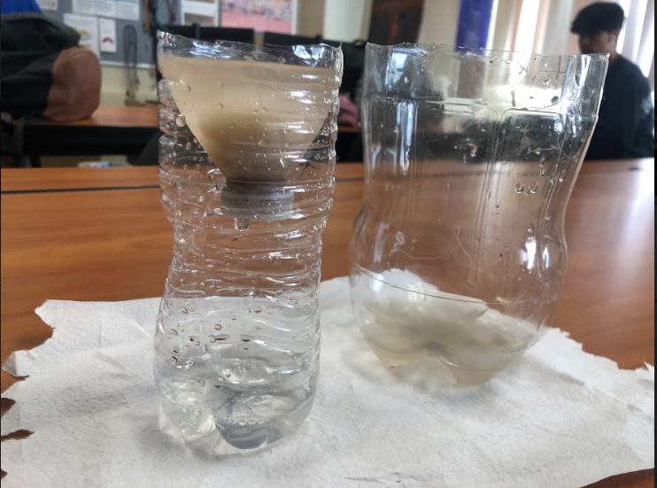

Engineering Notebook

Hello, we learnt the basic stuff about this programm today.
Hello, this week I refreshed my tinkercad knowledge and made a stove which was our challange for Thursday.
Hello, this weak we worked on our TinkerCad again and we should soon begin to work on our project IRL.
 There are three Hyenas behind me. They even laugh like those three Hyenas from the Lion King.
There are three Hyenas behind me. They even laugh like those three Hyenas from the Lion King.
This week we began to work on our project but it ended up to be dissapoitment. We do not have enough materials to support our ideas for our pronject. We can even make a ramp and we don't even know how we will pop the baloon since we don't have enough materials to do that. But luckily we finished our project and it went well and popped from the first try which is very good.
This is our live picture of the project AND the video.
This is our R Machine Video. Machine Project.
My Cad.
The best villain death in movie/animation history!  This week we made an animal phostetic, I chose leg and made a phostetic for a fox since we could not use cats dogs or other simple animals. I chose fox because it is one of my favorite animals and because it was not hard to make a leg for a fox that looks like form Minecraft.Our Laptop.
This week we learnt about computer engineering, we rebuilt a laptop but during the process we also studied what is inisde. We found where CPU and GPU is, where the ram and storage is and etc. After finishing we rebuilt everything the way it was. It was very fun and interesting.
This week we built our rocket project prototype inside CAD. And not only this, we also learnt about aerospace engineering which is my favorite type of engineering. Next week we will make our actual rocket which will be fun since we will actually launch it by using water inside a bottle and adding pressure to it so it works as thrust for our rocket.   